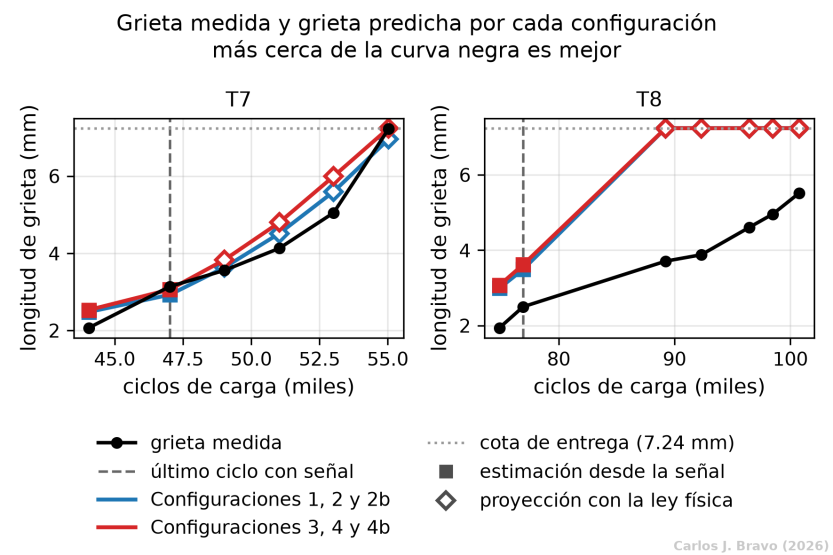
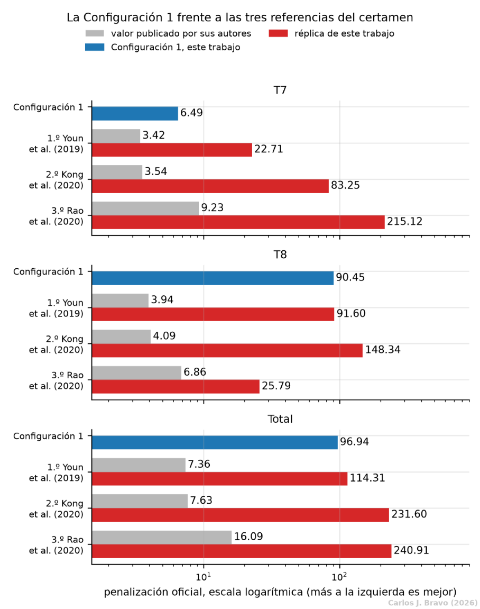
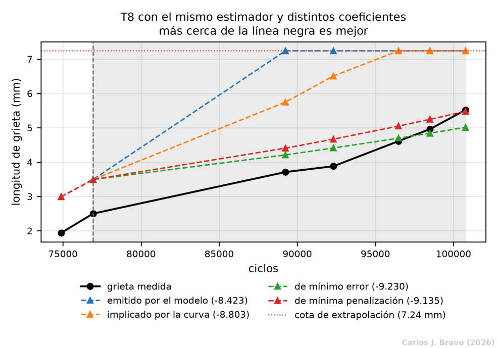
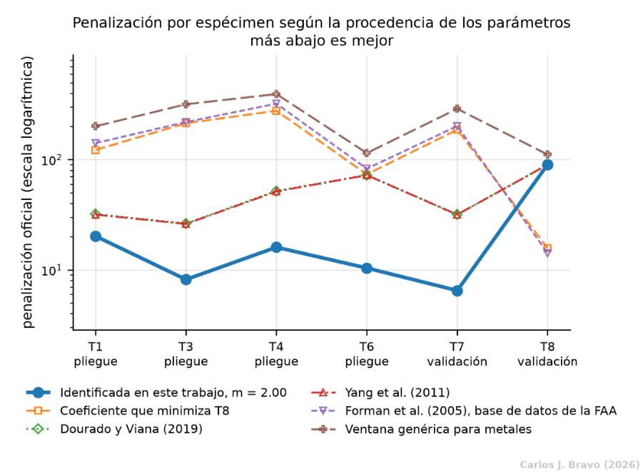

- 1. El problema
- 2. La señal
- 3. La ley física
- 4. El modelo
- 5. Conclusiones
- Bibliografía
Configuración 4 y las cuatro, frente a frente
La última configuración junta las dos piezas opcionales. Su papel no es ganar, sino cerrar el estudio: con las cuatro combinaciones a la vista se puede separar lo que aporta cada pieza por su cuenta de lo que aportan juntas. Después toca comparar las cuatro y responder a la pregunta que queda abierta desde la Configuración 1: ¿por qué falla T8?
Las dos piezas a la vez
La Configuración 4 no introduce ninguna arquitectura nueva: es la red de la Configuración 3, con autoatención, acoplada al motor de extrapolación de la Configuración 2, con integración paso a paso. La variante 4b añade además el retardo de Wheeler. Como comparte la red de la Configuración 3, su entrenamiento es el mismo y su entrega coincide punto a punto con la de esta.
Lo que aporta cada pieza, por diferencia
Con las cuatro configuraciones disponibles, la aportación de cada pieza se obtiene comparando las parejas que solo se distinguen en ella. Por ejemplo, la Configuración 3 frente a la 1 y la 4 frente a la 2 aíslan la autoatención; la 2 frente a la 1 y la 4 frente a la 3 aíslan el predictor multi-paso. La aportación conjunta mide si las dos juntas hacen algo que no hacen por separado.
| Término | T7 | T8 |
|---|---|---|
| Predictor multi-paso | +0.00000004 | +0.00000000 |
| Autoatención | -0.60040 | +0.66880 |
| Aportación conjunta de ambos | -0.00000013 | +0.00000000 |
El predictor multi-paso y la aportación conjunta salen nulos hasta la octava cifra decimal. No es una estimación sino una identidad: las parejas que los miden comparten pesos y entregan la misma curva, y una pieza que no cambia la curva no puede aportar nada, ni sola ni acompañada. El único término que puede ser distinto de cero es el de la autoatención, y para saber qué se puede afirmar sobre él hay que mirar cómo cambia con la semilla.
| Tanda de semillas | Aportación en T7 | Aportación en T8 |
|---|---|---|
| 0 | -0.600 | +0.669 |
| 1 | +0.690 | +0.123 |
| 2 | -0.342 | +0.488 |
| 3 | -1.914 | +0.186 |
En T7 la aportación cambia de signo de una tanda a otra: la atención mejora unas veces y empeora otras, con un recorrido varias veces mayor que su media. En T8 mantiene el signo, pero el contrario al deseado: empeora en las cuatro tandas. No hay base para atribuirle una mejora en ninguna de las dos probetas.
Las cuatro, frente a frente
El estudio de ablación produce seis filas, pero solo dos conjuntos de números distintos, uno por cada red entrenada. Las piezas que actúan después de la red no cambian nada de lo que se entrega.
| Configuración | T7 | T8 | Total | RMSE T7 (mm) | RMSE T8 (mm) |
|---|---|---|---|---|---|
| 1 (a+b) | 6.49 | 90.45 | 96.94 | 0.350 | 2.418 |
| 2 (a+b+c) | 6.49 | 90.45 | 96.94 | 0.350 | 2.418 |
| 2b (a+b+c con retardo) | 6.49 | 90.45 | 96.94 | 0.350 | 2.418 |
| 3 (a+b+d) | 5.88 | 91.12 | 97.00 | 0.522 | 2.431 |
| 4 (a+b+c+d) | 5.88 | 91.12 | 97.00 | 0.522 | 2.431 |
| 4b (a+b+c con retardo+d) | 5.88 | 91.12 | 97.00 | 0.522 | 2.431 |
El mejor total es el de la Configuración 1, la base sin piezas opcionales. La conclusión del estudio es que ninguno de los dos componentes opcionales aporta de forma atribuible en la métrica del certamen.

La figura muestra la diferencia entre las dos probetas mejor que cualquier tabla. En T7, de carga constante, las dos familias siguen la forma de la curva medida durante toda la vida restante: el mayor error de la proyección es de 0.55 mm y el último punto queda 0.26 mm por debajo de la medida. En T8, de carga variable, la estimación ya parte en torno a un milímetro por encima, el punto de anclaje queda un 40% alto y la proyección toca la cota de 7.24 mm en el primer ciclo sin señal, mientras la grieta real termina en 5.52 mm.
| Magnitud | T7, config. 1 y 2 | T7, config. 3 y 4 | T8, config. 1 y 2 | T8, config. 3 y 4 |
|---|---|---|---|---|
| Penalización | 6.49 | 5.88 | 90.45 | 91.12 |
| de la estimación | 1.59 | 1.02 | 5.38 | 6.05 |
| de la proyección | 4.89 | 4.87 | 85.07 | 85.07 |
| RMSE (mm) | 0.35 | 0.52 | 2.42 | 2.43 |
| Sesgo (mm) | 0.16 | 0.38 | 2.22 | 2.25 |
| Error del anclaje | -6.8% | -2.5% | 39.7% | 44.7% |
Hay un detalle que parece contradictorio y no lo es. En T7, el grupo con atención puntúa mejor (5.88 frente a 6.49) teniendo un error cuadrático mayor (0.52 frente a 0.35 mm). La explicación está en la asimetría de la regla: ese grupo sobreestima más, con un sesgo de 0.38 frente a 0.16 mm, y el certamen castiga menos pasarse que quedarse corto.
Frente a los ganadores del certamen
Frente a las réplicas, que son el único término reproducible con el mismo protocolo, la Configuración 1 queda por delante de las tres en T7 y en el total, y de dos de las tres en T8. En T7 su penalización, 6.49, es tres veces y media menor que la de la mejor réplica (22.71, Youn et al.), supera al valor publicado por el tercer puesto (9.23) y queda en el mismo orden que los publicados por el primero y el segundo (3.42 y 3.54). Frente a estos dos, en cambio, pierde con claridad en el total, y la distancia procede entera de T8.

Conviene subrayar una decisión que encarece el resultado de T8 a propósito: esa probeta no se usó en ningún entrenamiento ni en ninguna selección de hiperparámetros. Hacerlo habría sido una fuga de información, es decir, usar los datos con los que se va a juzgar el método para tomar decisiones sobre él. Existen constantes con las que T8 puntúa mucho mejor, pero para encontrarlas hay que mirar su curva medida, que es justo lo que el método no tiene cuando predice.
Por qué falla T8
La penalización de T8 es catorce veces la de T7. El diagnóstico sitúa la diferencia en el coeficiente con el que se extrapola, no en la red que estima.
| Probeta | log10 C emitido | log10 C implicado por la curva | Banda con error inferior a 1 mm |
|---|---|---|---|
| T7 | -8.423 | -8.420 | De -8.635 a -8.290: el modelo cae dentro |
| T8 | -8.423 | -8.803 | De -9.600 a -9.025: el modelo cae fuera por 0.602 décadas |
Con el coeficiente adecuado, la misma red entregaría en T8 un resultado unas seis veces mejor: un barrido del coeficiente, dejando todo lo demás fijo, sitúa el mínimo de la penalización en 14.34, con log10 C = -9.135. El estimador, por tanto, no es el culpable.

Hay que ser claros también sobre lo que significa el 90.45. Sin la cota de 7.24 mm, la extrapolación de T8 se dispara y la penalización sería de 8289.46. La cota la baja a 90.45, pero los cinco puntos predichos quedan en el mismo valor mientras la grieta real crece de 3.71 a 5.52 mm. Ese número refleja una sobreestimación acotada, no una prognosis: en la mitad ciega de T8, el método no aporta información.
Un problema cerrado por dos lados
Las configuraciones 2 y 3 fallan en T8 por razones independientes, y esa independencia es lo más informativo del estudio.
¿Y si se usaran otras constantes?
Queda una última prueba: mantener la Configuración 1 tal cual y cambiar solo de dónde salen las constantes de la ley de Paris. El contraste se hace sobre las seis probetas que se pueden puntuar, para que el juicio no dependa de dos.

Las constantes identificadas en este trabajo ganan a todas las fuentes externas en las cinco probetas de carga constante, con márgenes de una vez y media a más de cuarenta veces. La única excepción es T8, y ahí la diferencia no es de grado. El coeficiente que optimiza T8 baja su penalización a 15.73, pero acumula 875.29 puntos en las otras cinco, catorce veces los 61.28 de las constantes adoptadas. El ajuste de la base de datos de la FAA para el 2024-T3 (Forman et al., 2005) repite el patrón sin haber sido elegido para ello: gana T8 con 14.17 y paga 968.17 en las otras cinco.
Que las constantes que convienen a T8 sean precisamente las que arruinan las demás indica que la discrepancia no es de ajuste sino de régimen: una firma de carga distinta pide constantes distintas. Las identificadas con carga constante no se pueden trasladar a carga variable, y el conjunto del certamen no ofrece ninguna probeta de carga variable en entrenamiento con la que identificar las suyas.